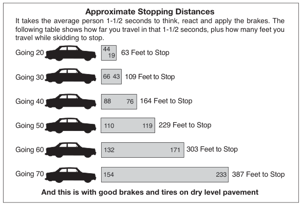
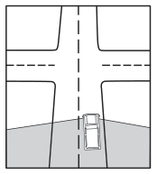
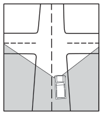
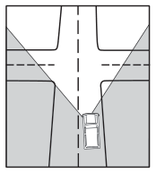
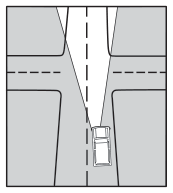

Speed
Generally, you should drive at the same speed as the main stream of traffic and always be aware of how fast you are traveling. You must always obey the speed limit and you should consider these best practices below:
Special Note: When the vehicle ahead of you passes a fixed object and you reach the same fixed object in less than two seconds, you are following too closely.
- You should keep a safe distance between your car and the one in front of you. The faster you drive, the greater the distance you should keep from the car ahead of you. For speeds 30 mph or less, the minimum time between your car and the one in front of you is 2 seconds with good road conditions. For speeds above 30 mph, maintain a 4 second gap between cars during good road conditions. During periods of poor road conditions, allow more time. Using a four-second following interval is the best practice for a beginning or less experienced driver.

Approximate Stopping Distances · It takes the average person 1-1/2 seconds to think, react and apply the brakes. The travel while skidding to stop. 63 Feet to Stop · following table shows how far you travel in that 1-1/2 seconds, plus how many feet you · Going 20 · Going 30 · 109 Feet to Stop · Going 40 · 164 Feet to Stop · Going 50 · 229 Feet to Stop · Going 60 · 303 Feet to Stop · Going 70 · 387 Feet to Stop · And this is with good brakes and tires on dry level pavement
- You should adjust your speed and following distance according to your physical condition and the conditions of the vehicle and road. If you are tired or not feeling well, do not drive. Never force yourself to drive.
-
You should know when to slow down and increase the following distance.
- Slow down and increase the following distance when the road is wet. Many drivers find out too late what a small amount of rain can do. Roads become slippery when wet, making your car harder to control. Slow down and make sure you have complete control of the situation at all times.
- Slow down and increase the following distance when the road is crowded.
- Slow down and increase the following distance when your vision is limited. You should always be able to stop within the distance you can see ahead of your car. In the dark or in bad weather, do not over-drive your range of vision.
Speed Reduces Your Field of Vision




| Stationary Field of vision is 180 degrees or more | 20 MPH Field of vision reduced to about 2/3 | 40 MPH Field of vision reduced to about 2/5 | 60 MPH Field of vision reduced to about 1/5 |
Speed Limits
Drivers are required to obey posted minimum and maximum speed limits. These limits are designed to provide for the orderly flow of traffic under normal driving conditions. During periods of heavy traffic, bad weather, low visibility, or other poor driving conditions, you must adjust your speed and following distance to help avoid crashes.
The Speed Limits table shows the maximum speed limits for all vehicles under different conditions. Drivers must also be aware cities and counties have the authority to change these limits. Entities that establish or alter a speed limit must establish the same speed limit for daytime and nighttime.
| Type of Roadway | Speed (MPH) |
|---|---|
| Urban District | 30 |
| Alley | 15 |
| Beaches and County Roads adjacent to a public beach (if declared by the commissioners court of the county) | 15 |
| Highway numbered by Texas or the U.S. outside an urban district including Farm to Market and Ranch to Market roads Passenger cars, motorcycles, light truck, passenger car or light truck towing a trailer or semi-trailer, truck or truck-tractor, truck or truck-tractor towing a trailer or semi-trailer, buses, school activity bus. School Buses which have passed a commercial vehicle inspection. | 70 60 |
| Highway not numbered by Texas or the U.S. and outside an urban district: Passenger cars, motorcycles, light truck, passenger car or light truck towing a trailer or semi-trailer, truck or truck-tractor, truck or truck-tractor towing a trailer or semi-trailer, buses, school activity bus. School buses that have not passed a commercial vehicle inspection or are traveling on a highway not numbered by Texas or the U.S. | 60 50 |
The Texas Transportation Commission, regional mobility authorities and local governments have authority to raise or lower speed limits based on traffic studies and other statutory requirements. Many limited access highways have speed limits of 75 up to 85 mph. Always be aware of and observe the posted speed limit for the roadway on which you are driving.
Slow Down or Move Over
If an emergency medical vehicle, law enforcement vehicle, fire truck, tow truck, utility service vehicle, Texas Department of Transportation vehicle (TxDOT, or other highway construction or maintenance vehicle) is stopped on the road with its lights activated (the lights are on or flashing), then the driver is required:
- To reduce his/her speed to 20 mph below the speed limit; or
- Move out of the lane closest to the emergency medical vehicle, law enforcement vehicle, fire truck, tow truck or a TxDOT vehicle if the road has multiple lanes traveling in the same direction.
There are other instances where it is important to be observant of vehicles stopped on the road. Mail, delivery, and trash-collection vehicles often make frequent stops in the roadway. Drivers must proceed with caution, and, if possible, change lanes before safely passing one of these vehicles on the road.
Street Racing
Street racing, also known as drag racing, is illegal and can result in serious injuries or fatalities. Illegal street racers put other drivers at risk because races are typically held on public roads. Due to the high speeds, drivers are unable to react to common road hazards or other driving situations, which often results in crashes.
Illegal street racing also causes unnecessary property damage, including extensive wear on roads (due to the high-powered engines damaging asphalt), which requires costly repairs at the expense to the tax-payer.
Please visit the National Highway Traffic Safety Administration (NHTSA) https://www.nhtsa.gov/risky-driving/speeding for speed related fatalities.
A person may not participate in:
- A race;
- A vehicle speed competition or contest;
- A drag race or acceleration contest;
- A test of physical endurance of the operator of a vehicle; or
- In connection with a drag race, an exhibition of vehicle speed or acceleration, or to make a speed record.
The criminal penalty for a conviction of Speed Racing ranges from a Class B misdemeanor to a second-degree felony.